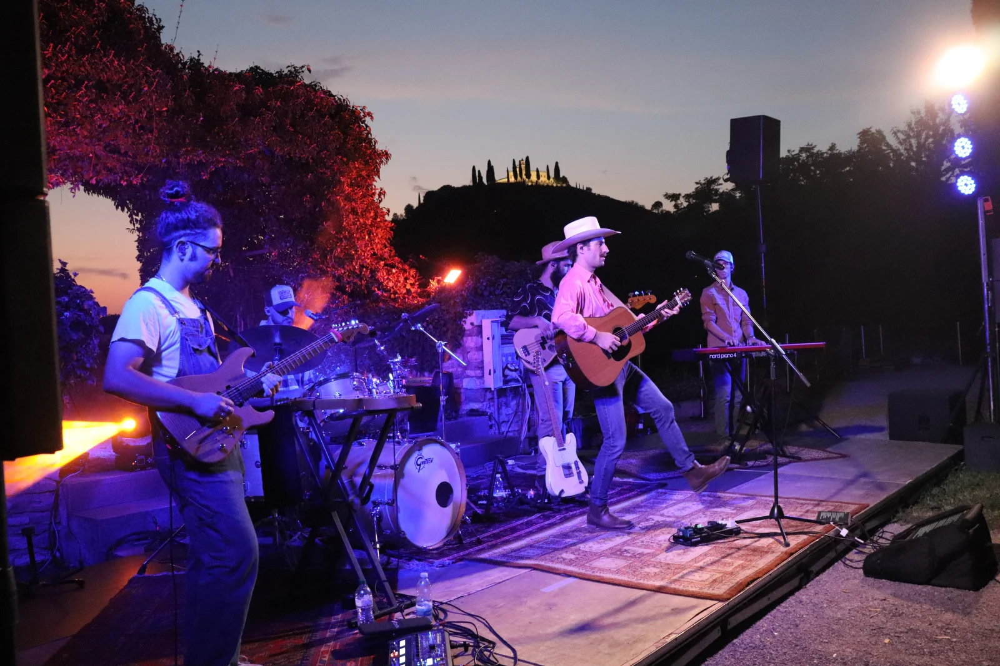

Siamo una band country di Brescia. Arriviamo con audio e luci nostri, montiamo, suoniamo un paio d’ore e smontiamo: tu devi solo aprire le porte. Raccontaci che serata hai in mente e ti diciamo subito come la faremmo — e quanto costa.
Non trenta secondi montati bene: una canzone dall’inizio alla fine, registrata dal vivo. Se ti piace quello che senti, il resto della serata suona così.
 Guitar · Zach Top
Guitar · Zach Top
Non devi noleggiare niente. Montiamo, suoniamo e smontiamo: fino a 250 persone siamo autosufficienti.
5 × 3 metri e una presa di corrente. Ci siamo infilati in palchetti, cortili e angoli dietro il bancone.
Set da 1h30 a 2h30. Calibriamo sul locale: al bancone si continua a ordinare e a parlare.
Circa 50 brani in repertorio, ne suoniamo 20: ballads davanti al cocktail o party song sui tavoli, decidi tu.

Bastano trenta secondi. Ti rispondiamo entro 24 ore con proposta, scaletta tipo e cachet — senza impegno.
Ti rispondiamo entro 24 ore. Se hai fretta, scrivici su WhatsApp al +39 393 7011409.